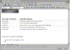
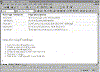

| ||||
Another way to group and organize information is by using lists. Web pages can have two types of lists -- numbered and bulleted. Numbered lists contain text preceded by numbered steps, just like the procedures in this tutorial. Bulleted lists contain text preceded by bullets or image bullets. You use a bulleted list if the list items need not be listed in any particular order.
In Lesson 1, you created bulleted lists on the "Interests" and "Favorites" pages. You will now create a numbered list.
The key combination CTRL+ENTER creates a new line below the table.
You have created a Heading 2 text paragraph.
Figure 1. The Numbered List button
FrontPage adds a new line with a "1." at the beginning.
FrontPage adds a new line with a "2." at the beginning.

Click image to enlargeFigure 2. Creating a numbered list
Create or open a FrontPage-based Web site
Launch the FrontPage Editor
Create or edit pages in your FrontPage-based Web site
Save your changes
Publish the FrontPage-based Web site to your Web site
Pressing ENTER twice ends the current list.
The list you created should now look like this:

Click image to enlargeFigure 3. The complete list
Figure 4. The Save button
The page is saved to the current FrontPage-based Web site.
Did you find this material useful? Gripes? Compliments? Suggestions for other articles? Write us!
© 1999 Microsoft Corporation. All rights reserved. Terms of use.